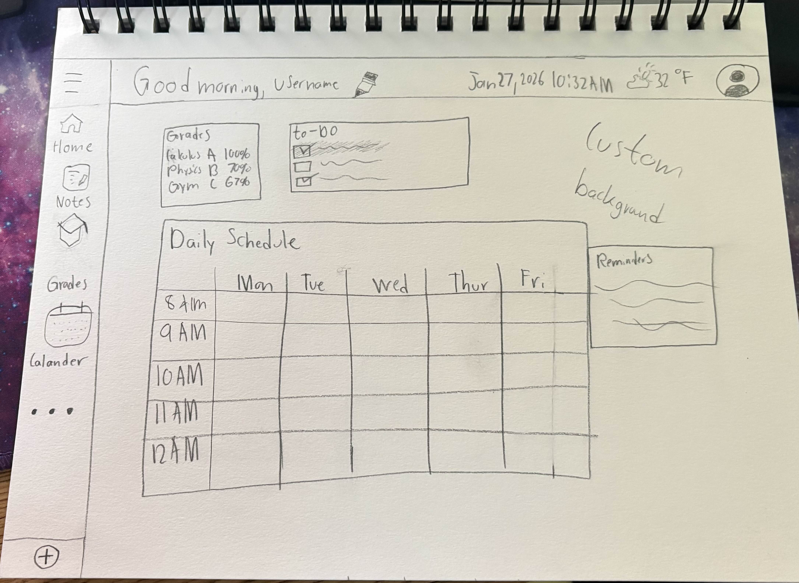

For me, development is the only place where I can truly scratch my creative itch. It's the one discipline where I can start with nothing but a blank screen and build a tangible solution that solves a real-world problem. However, I've realized that I don't just want to write code in a vacuum. That being said, my goal is to become a Solutions Engineer, combining this creative drive with technical architecture to build products that don't just work, but actually solve the user's problem.

Learneant App